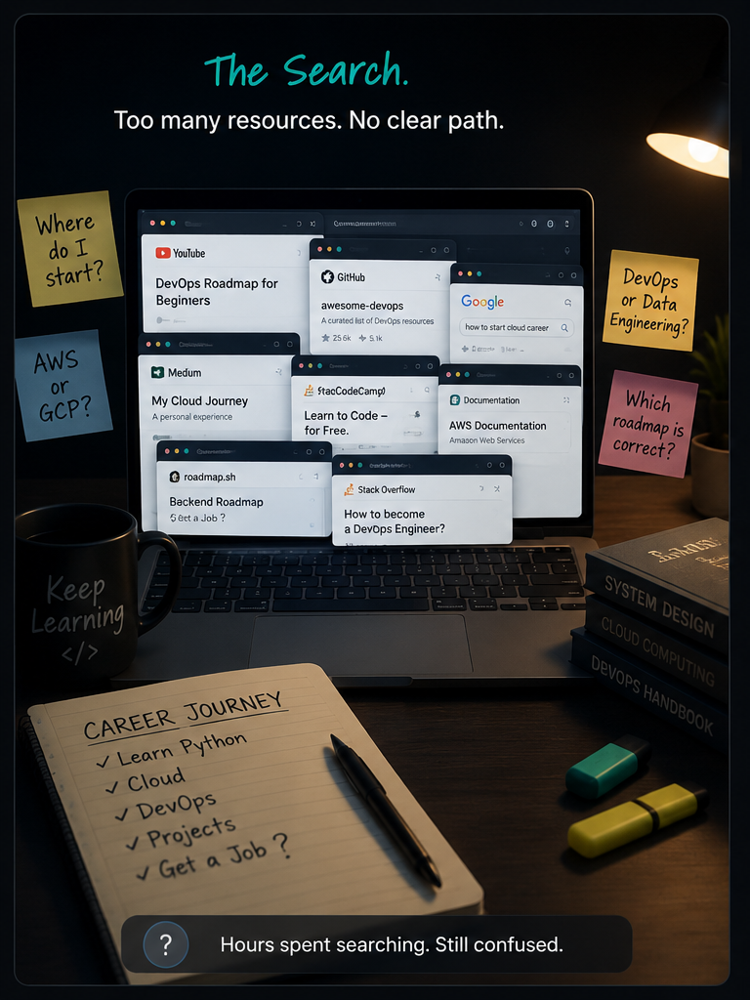
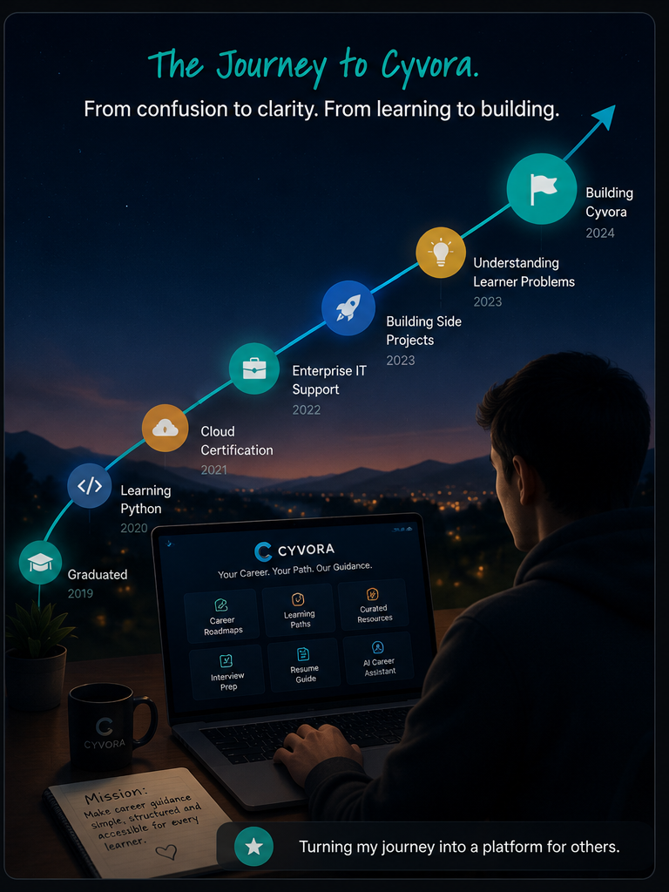

From confused search to a guided career path
The real challenge I faced after college was not the code. It was the noise. Every new tutorial, roadmap, and recommendation felt like another fork in a path that had no map.
One article said cloud, another said AI, and every mentor had a different first step. That made every day feel like a guessing game.
Learning resources explained tools, but not how those tools connect into real projects, interviews, and a career.
I had the information, but not the clarity to turn it into a plan I could follow with confidence.
How this became a founder story
After months of piecing together advice from blogs, videos, documentation, and course previews, I realized the gap was bigger than my own journey. Students and early builders were not missing knowledge—they were missing a trusted way to connect what they learned to the next right step.
- I spent more time deciding what to learn than actually learning.
- I had access to great content, but it was scattered across too many sources.
- I wanted a place that would feel like a mentor: clear, practical, and easy to follow.
That question became the starting point for Cyvora Studio: what if one platform could turn career advice into a guided journey instead of a long list of disconnected resources?


“I built Cyvora Studio because I wanted the guidance I never found when I was starting—clear, practical, and tuned to the real career journey.”
Why this problem matters to real learners
The challenge facing today's learners isn't a lack of information—it's the overwhelming abundance of it. A student who wants to become a Cloud Engineer, Data Engineer, or DevOps Engineer can find thousands of videos, articles, tutorials, certification guides, and roadmaps within minutes. While that sounds like an advantage, it often creates a different problem: decision paralysis.
Without guidance, it's difficult to know which skills are fundamental, which technologies are worth learning first, and which resources are genuinely useful. Many beginners spend weeks comparing learning paths instead of actually learning.
For students from Tier-2 and Tier-3 cities, the challenge can be even greater. Not everyone has access to experienced mentors, professional networks, or expensive bootcamps. For many, the internet is their only teacher. When that information is scattered across dozens of platforms, building confidence becomes just as difficult as building technical skills.
The internet has made learning more accessible than ever, but it has also made it easier to feel overwhelmed. A simple search for "How to become a DevOps Engineer" can return thousands of tutorials, roadmaps, and opinions. Without context, beginners often struggle to distinguish essential concepts from optional ones.
Every career path seems to begin somewhere different. Some recommend programming first, others suggest cloud certifications, while others emphasize projects or interview preparation. For someone just starting out, deciding what to learn can become more difficult than learning itself.
Many structured learning platforms provide excellent content, but subscription fees, bootcamps, and mentorship programs aren't affordable for everyone. Learners should not have to choose between financial constraints and career growth. Accessible, high-quality guidance should be available to anyone willing to learn.
During my own learning journey, I spent more time researching what to learn than actually learning. Looking back, I realized that months could have been saved if I had a structured roadmap instead of navigating dozens of disconnected resources. That realization eventually became the foundation for Cyvora Studio.
What was missing from the learning landscape
As I explored different learning platforms, I realized something interesting: most of them were doing exactly what they were designed to do—and doing it well.
Some offered high-quality video courses that explained concepts in depth. Others focused on interview preparation, helping candidates practice coding problems or technical questions. Documentation websites were excellent references once you knew what to look for, and community forums were invaluable when you encountered specific challenges.
The problem wasn't the quality of these resources. The problem was that they existed in isolation.
For someone already working in the industry, connecting these resources is relatively straightforward because they understand how different technologies fit together. But for someone just beginning their journey, it's difficult to answer basic questions such as:
- What should I learn first?
- Which skills build on each other?
- When should I start building projects?
- Which resources are worth my time?
- How do these technologies relate to real jobs?
Instead of following a clear path, many learners spend their time switching between platforms, trying to piece together their own roadmap.
That was the gap I kept coming back to.
I wasn't trying to replace existing learning platforms—they already provide tremendous value. I wanted to build something that could connect them into a structured journey, helping learners understand not just what to learn, but when, why, and how each step fits into the bigger picture.
What I realized while researching the space
While exploring dozens of learning platforms, I noticed that most were designed to solve individual problems rather than the entire learning journey. One platform could teach a technology exceptionally well, another could help prepare for interviews, and another offered valuable documentation. However, beginners still had to decide how to connect these pieces on their own. I realized that learners weren't looking for more content—they were looking for confidence, direction, and a roadmap that transformed scattered information into a meaningful path toward their career goals.
That realization became the foundation of Cyvora Studio — not as another destination for learning, but as a guide that helps learners navigate the rich ecosystem of resources already available.
Turning a personal frustration into a product
Once I understood the problem, I stopped asking myself, "What features should I build?" Instead, I started asking a much more important question:
"If I were starting my learning journey again today, what would I want to have?"
The answer wasn't another course or another collection of tutorials. It was a platform that could act as a trusted companion throughout the entire journey—helping learners understand what to learn, why it matters, and what to do next.
That idea became the foundation of Cyvora Studio.
Rather than creating more educational content, I focused on organizing the wealth of existing knowledge into a structured experience. My goal was to reduce the time learners spend searching for answers so they can spend more time building real skills.
Every feature was designed around a simple principle: guide learners step by step without overwhelming them.
Instead of simply providing information, Cyvora Studio brings together the different parts of a learner's journey into one connected experience.
🚀 Interactive Career Roadmaps
Visual roadmaps that help learners understand the sequence of skills required for different technology careers, making it easier to progress with confidence.
🤖 AI-Powered Learning Guidance
AI-assisted recommendations that help explain concepts, organize learning paths, and suggest logical next steps without replacing the learner's own curiosity.
📚 Beginner-to-Advanced Learning Paths
Structured paths that gradually introduce concepts instead of expecting beginners to navigate complex topics on their own.
🎓 Curated Free Learning Resources
Carefully selected documentation, courses, articles, videos, and tutorials so learners can focus on learning instead of endlessly searching.
💼 Interview Preparation
Resources and guidance that help learners move from understanding concepts to preparing for technical interviews with confidence.
📄 Resume Guidance
Practical suggestions to help learners showcase their projects, certifications, and technical skills in a professional way.
💻 Developer Resource Hub
A growing collection of references, GitHub resources, best practices, and tools that support continuous learning beyond the classroom.
🧭 Career Planning Tools
Features designed to help learners understand different technology roles, identify skill gaps, and plan their next learning milestone.
While building Cyvora Studio, I kept coming back to one principle:
Technology should reduce confusion, not create more of it.
Every design decision—from the interface to the learning paths—was guided by the idea of making the experience simple, approachable, and purposeful.
I didn't want learners to open the platform and wonder where to begin. I wanted them to feel that the next step was already waiting for them.
The goal was never to build the biggest learning platform. It was to build one that helps learners move forward with clarity—one meaningful step at a time.
Using AI to reduce friction, not replace learning
When I started building Cyvora Studio, I wasn't looking for AI to write the entire platform for me. I wanted it to help me think more clearly, organize ideas more effectively, and design an experience that would genuinely help beginners.
Throughout development, Google AI became a collaborative tool rather than a replacement for my own work. It helped me explore different ways to explain technical concepts, organize learning journeys, and continuously refine the experience from a learner's perspective.
Instead of asking, "What feature should I build next?", I found myself asking better questions:
- How can this topic be explained more clearly?
- What would make this roadmap easier for a beginner to follow?
- How can complex technologies be broken into manageable learning milestones?
- What information should a learner see first?
Those conversations helped shape many of the educational decisions behind Cyvora Studio.
Ultimately, the platform is still built through my own research, design decisions, testing, and iteration. AI simply accelerated the process by helping transform ideas into structured learning experiences.
One of the biggest challenges wasn't creating content—it was organizing it. Google AI helped me explore different ways to connect technologies, certifications, projects, and career paths into structured roadmaps that feel logical instead of overwhelming. Rather than presenting isolated topics, I focused on creating learning journeys where each step naturally builds on the previous one.
Many technical concepts become intimidating because they're introduced without enough context. Google AI helped me experiment with clearer explanations, simpler analogies, and beginner-friendly learning sequences. The goal wasn't to remove complexity but to make it approachable so learners could build confidence as they progressed.
Learning should be accessible regardless of someone's background or prior experience. Google AI supported me in refining content structure, improving readability, and organizing information in ways that reduce cognitive overload. Small improvements in navigation, explanations, and presentation can make a significant difference for someone learning a topic for the first time.
“AI Won't build Cyvora Studio for me it will help me to build a better learning experience for others.”
Why local accessibility matters
Technology has created incredible learning opportunities, but access to those opportunities is still uneven.
Students in metropolitan cities often benefit from stronger professional networks, experienced mentors, workshops, and communities that make navigating a technology career a little easier. For many learners in Tier-2 and Tier-3 cities, those support systems simply aren't available.
In those situations, the internet becomes more than a source of information—it becomes the primary teacher.
But information alone isn't enough. When learning resources are scattered across countless websites, videos, and documentation pages, it's easy to feel overwhelmed before making meaningful progress.
That's the Problem I wanted "Cyvora Studio" to address.
Rather than asking learners to search through dozens of disconnected platforms, Cyvora aims to provide a structured starting point where they can understand what to learn, why it matters, and how each step contributes to their long-term career goals. The impact I care about most isn't measured by page views or feature count. It's measured by whether someone opens the platform feeling uncertain and leaves with a clearer direction.
Growing up, I learned that opportunities are not always limited by talent—they are often limited by access to guidance. That realization continues to shape every decision I make while building Cyvora. My goal is to reduce the amount of time learners spend wondering "What should I do next?" so they can spend more time building skills, creating projects, and preparing for meaningful careers.
“Example Imagine a student who has just completed college and wants to become a Cloud Engineer but has no mentor to guide them. Instead of spending weeks comparing tutorials, certifications, and conflicting roadmaps, they open Cyvora Studio and find a structured learning path that explains where to begin, what to learn next, and where to find trusted free resources. That learner may still have a long journey ahead, but they're no longer navigating it alone.”
Where I want to take Cyvora Studio next
The next phase for Cyvora Studio is about making the experience even more personal and helpful.
Personalized roadmap generation and useful tools and learning resources for learners.
Real-time guidance for learning decisions and next steps.
Free Tools which can help professionally and in day to day life.
Why this story matters to me
My goal is not just to build another learning website. It is to make quality technology education more accessible to students who may not have mentors, expensive courses, or industry connections.
If AI can help shorten someone’s learning journey by even a few months, that is meaningful. If it can help a student understand what to learn next, that is meaningful. If it can turn confusion into direction for someone who has been stuck for too long, that is especially meaningful.
That is what Cyvora Studio is really about: making the path into tech a little clearer, a little fairer, and a little more human.
“The success of Cyvora Studio won't be defined by how many pages it contains. It will be defined by how many learners feel confident enough to take the next step in their journey.”